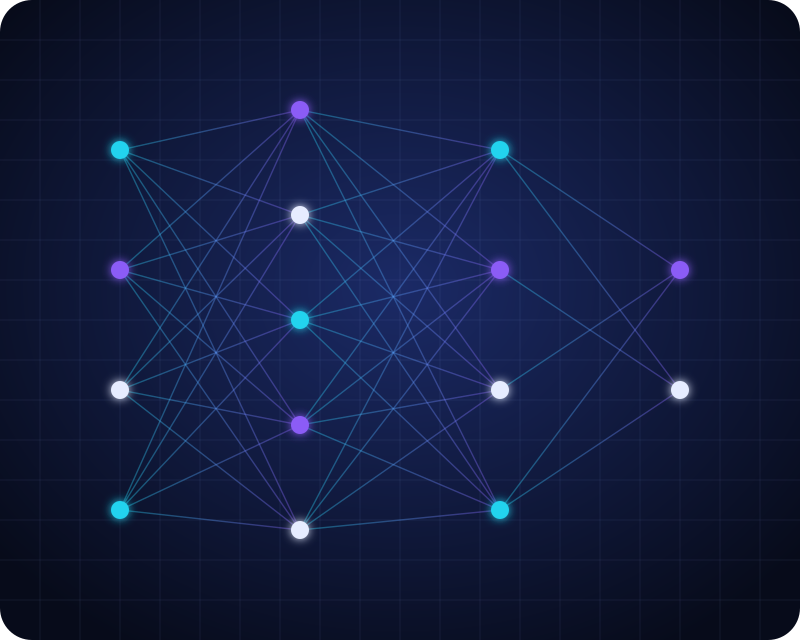

Chatbot & Virtual Assistant
Asisten percakapan 24/7 untuk layanan pelanggan dan tim internal, terhubung ke basis pengetahuan perusahaan Anda.
Kami merancang, membangun, dan menerapkan solusi AI — dari chatbot cerdas hingga analitik prediktif — yang terukur dampaknya dan aman untuk data perusahaan Anda.

Pilih layanan yang paling sesuai, atau kombinasikan beberapa layanan dalam satu roadmap transformasi.
Asisten percakapan 24/7 untuk layanan pelanggan dan tim internal, terhubung ke basis pengetahuan perusahaan Anda.
Otomatisasi tugas berulang seperti pemrosesan dokumen, verifikasi data, dan pelaporan agar tim fokus pada pekerjaan bernilai tinggi.
Deteksi objek, inspeksi kualitas produk, dan pembacaan dokumen (OCR) secara real-time dari gambar maupun video.
Prakiraan permintaan, deteksi anomali, dan skoring risiko berbasis machine learning untuk keputusan yang lebih tepat.
Penyesuaian model bahasa dan pipeline retrieval-augmented generation agar jawaban akurat, relevan, dan bersumber dari dokumen Anda.
Audit kesiapan data, penentuan use case prioritas, hingga roadmap implementasi dan tata kelola AI yang bertanggung jawab.
NovaMind AI adalah studio jasa Artificial Intelligence yang membantu perusahaan mengubah eksperimen menjadi produk yang berjalan di produksi. Kami memadukan data scientist, engineer, dan konsultan bisnis dalam satu tim.
Ceritakan tantangan bisnis Anda. Tim kami akan membalas dalam 1×24 jam kerja dengan usulan langkah awal.